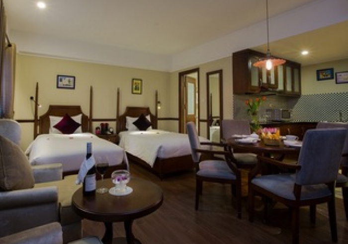
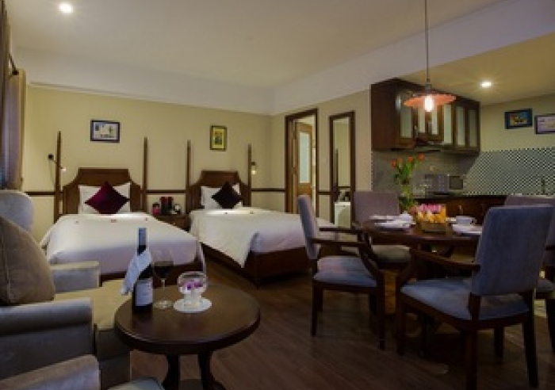

Hành Trình
Ngày qua ngày :
ngày 1:
07:45 – 08:30 Hướng dẫn viên và lái xe đón Quý khách tại khách sạn đi tham quan Chùa Trấn Quốc – ngôi chùa thiêng nằm bên bờ Hồ Tây. 09:00 Quý khách tham quan Lăng Chủ tịch Hồ Chí Minh – nơi an nghỉ cuối cùng của vị lãnh tụ kính yêu của dân tộc Việt Nam, và Nhà sàn Bác Hồ – nơi Bác ở và làm việc từ năm 1958 đến năm 1969. 10:00 Điểm dừng chân tiếp theo là Chùa Một Cột – ngôi chùa có kiến trúc độc đáo mang dáng dấp của một đài sen mọc lên giữa lòng hồ vuông vắn
Ngày 2 :
8:00 Quý khách đi tham quan Bảo tàng Dân tộc học, nơi lưu giữ và trưng bày nhiều hiện vật văn hoá của cả 54 dân tộc Việt Nam. 12:00 Quý khách nghỉ ngơi, ăn trưa tại nhà hàng trong phố cổ. 14:00 Quý khách đi tham quan Văn Miếu Quốc Tử Giám – trường đại học đầu tiên của Việt Nam thờ Khổng Tử.
Ngày 3 :
13:30 Điểm dừng chân cuối cùng là Hồ Hoàn Kiếm và Đền Ngọc Sơn. 16:00 Xe đưa Quý khách về khách sạn. Kết thúc chương trình.
Ngày 4 :
07:45 – 08:30 Hướng dẫn viên và lái xe đón Quý khách tại khách sạn đi tham quan Chùa Trấn Quốc – ngôi chùa thiêng nằm bên bờ Hồ Tây. 09:30 Quý khách tham quan Lăng Chủ tịch Hồ Chí Minh – nơi an nghỉ cuối cùng của vị lãnh tụ kính yêu dân tộc Việt Nam, và Nhà sàn Bác Hồ – nơi Bác ở và làm việc từ năm 1958 đến năm 1969. 10:30 Điểm dừng chân tiếp theo là Chùa Một Cột – ngôi chùa có kiến trúc độc đáo mang dáng dấp của một đài sen mọc lên giữa lòng hồ vuông vắn.
Ngày 5 :
07:45 – 08:30 Hướng dẫn viên và lái xe đón Quý khách tại khách sạn đi tham quan Chùa Trấn Quốc – ngôi chùa thiêng nằm bên bờ Hồ Tây. 09:30 Quý khách tham quan Lăng Chủ tịch Hồ Chí Minh – nơi an nghỉ cuối cùng của vị lãnh tụ kính yêu dân tộc Việt Nam, và Nhà sàn Bác Hồ – nơi Bác ở và làm việc từ năm 1958 đến năm 1969. 10:30 Điểm dừng chân tiếp theo là Chùa Một Cột – ngôi chùa có kiến trúc độc đáo mang dáng dấp của một đài sen mọc lên giữa lòng hồ vuông vắn.
Ngày 6 :
8:00 Quý khách đi tham quan Văn Miếu Quốc Tử Giám – trường đại học đầu tiên của Việt Nam thờ Khổng Tử. 11:30 Quý khách nghỉ ngơi, ăn trưa tại nhà hàng trong phố cổ. 13:30 Xe đưa Quý khách tới làng gốm Bát Tràng, một làng nghề truyền thống nổi tiếng của Hà Nội đã tồn tại hơn 500 năm. Quý khách tham quan các gian hàng trưng bày đồ gốm và xem các nghệ nhân của làng với bàn tay tinh xảo của mình đã nặn nên những món đồ gốm đẹp mắt như thế nào.
Địa điểm nên đến :
bản cát cát :
Từ trung tâm thị trấn Sapa, theo con đường hướng về phía núi Fanxipan khoảng gần 3km, du khách sẽ đến bản Cát Cát. Bản Cát Cát thuộc địa phận xã San Sả Hồ, là nơi tập trung đông đúc đồng bào dân tộc H’Mông sinh sống. Đây là một trong những cái tên đứng đầu danh sách địa điểm đáng đi nhất khi đến du lịch Sapa.
SAPA : thành phố ngủ trong mây và tuyết
Sa Pa nằm trên một mặt bằng ở độ cao 1500 đến 1650 mét ở sườn núi Lô Suây Tông. Đỉnh của núi này có thể nhìn thấy ở phía đông nam của Sa Pa, có độ cao 2228 mét. Từ thị trấn nhìn xuống có Thung lũng Ngòi Dum ở phía đông và Thung lũng Mường Hoa ở phía tây nam.
Thung lũng hoa hồng :
Sapa luôn là điểm đến làm nức lòng những người yêu du lịch. Không chỉ có cảnh sắc tươi đẹp mà nơi đây còn khiến du khách đắm chìm vào một thế giới mơ mộng, đầy chất thơ, đặc biệt khi tới thăm thung lũng Hoa Hồng đẹp mê đắm ở xóm 1, đường Mường Hoa, thị trấn Sapa. Với tổng diện tích khoảng 22ha, thung lũng được tạo thành từ hai dãy núi Hàm Rồng và Fanxipan.


 


Tới thăm thung lũng Hoa Hồng, du khách có cảm giác như lạc vào một khu vườn cổ tích với hàng trăm ngàn gốc hồng Sapa, hồng Pháp, hồng giòn Hoa Kỳ… Theo kinh nghiệm, tháng đẹp nhất để tới đây tham quan, thưởng lãm là từ tháng 11 tới tháng 3 hàng năm, khi hàng trăm gốc hoa thi nhau đua hương khoe sắc tạo ra một bức tranh tuyệt sắc.
Đèo Ô Quy Hồ :
Được mệnh danh là con đèo hùng vĩ bậc nhất ở miền Bắc với chiều dài gần 50km nối liền hai tỉnh Lào Cai và Lai Châu, đèo Ô Quy Hồ nằm trên độ cao 2.000m, uốn lượn quanh co qua những vách núi cao ngút trời và vực sâu thăm thẳm. Tuy nhiên, nếu vượt qua nỗi sợ hãi và trèo lên được tới đỉnh đèo ở độ cao gần 2.000m, bạn sẽ có cơ hội được chiêm ngưỡng cả biển trời mây bồng bềnh như cõi thần tiên. Chính bởi vậy, nó còn có cái tên là Cổng Trời.
Các món ăn nên thử khi đến sapa
Cơm lam :
Khi du lịch đến Sapa nếu bạn bỏ qua đặc sản cơm lam tại đây thì thật là đã bỏ phí một món ăn vừa ngon lại vừa rẻ của núi rừng Sapa. Từ nhà hàng, Khách sạn, đến các quán ăn ven đường… đều phục vụ món ăn độc đáo này.

Ở Sa Pa, người ta thường ăn cơm lam chấm muối vừng (muối mè) vì vị bùi thơm của nếp hòa vị bùi thơm muối mè sẽ quyến luyến mọi du khách. Ngoài ra, cơm lam cũng có thể ăn với thịt xiên. Thịt xiên được làm từ thịt lợn (heo) cắp nách. Loại heo nặng chừng 8-10kg/con, thả rông trên núi đồi. Thịt cắt từng miếng vừa ăn, xăm đều trước khi ướp gia vị. Ướp đúng kỹ thuật, miếng thịt dậy mùi thơm. Sau đó xiên xen kẽ vừa thịt vừa cải mèo – một đặc sản của Sa Pa – qua chiếc que tre trước khi nướng trên bếp lửa. Ăn cơm lam với thịt xiên nướng cải mèo, ngoài vị ngọt bùi của nếp nướng còn có vị cay nồng của cải mèo hòa cùng vị ngọt thơm của thịt heo. Người ta còn ăn cơm lam với gà nương ướp nướng như thịt heo cắp nách nướng.
2. Lợn (heo) cắp nách
Có tên gọi là lợn cắp nách là vì người dân ở đây thường cắp vào nách một chú lợn con tầm 8-10 kg xuôi chợ bán và người mua lại cắp nách đem về làm thịt. Loại lợn này rất săn chắc và thịt rất thơm ngon, chúng được thả rông và tự kiếm ăn trên những sườn dốc núi. Khi làm thịt, người ta làm sạch sẽ rồi tẩm ướp cả con cho lên nướng hoặc quay.
Lợn cắp nách khi chín có màu vàng ươm, lớp bì giòn tan và thơm phức, phần thịt mềm và ngọt, săn chắc, chấm cùng với nước chấm pha chế rất đặc biệt ở đây thật tuyệt vời.
Giá lợn hơi của lợn cắp nách khoảng tầm 100.000 – 200.000 đồng/kg, đảm bảo chất lượng sạch và an toàn. Lợn được bày bán tại các phiên chợ Sapa như: Mường Hum, Sín Chéng, Bắc Hà… các nhà hàng kinh doanh ở Sapa thường xuống các chợ này để mua lợn về chế biến phục vụ khách du lịch.
Gợi ý chỗ ở :
Khách sạn Hà Nội La Siesta
Hà Nội
giá tiền
3.000.000 VNĐ
Vị trí khu phố cổ tuyệt vời
Nhà hàng, phòng tập thể dục, rạp chiếu phim, và spa
Nhiều chỗ ở tốt
Khách sạn Hà Nội La Siesta
Hà Nội
giá tiền
3.000.000 VNĐ
Vị trí khu phố cổ tuyệt vời
Nhà hàng, phòng tập thể dục, rạp chiếu phim, và spa
Nhiều chỗ ở tốt

Khách sạn Hà Nội La Siesta
Hà Nội
giá tiền
3.000.000 VNĐ
Vị trí khu phố cổ tuyệt vời
Nhà hàng, phòng tập thể dục, rạp chiếu phim, và spa
Nhiều chỗ ở tốt